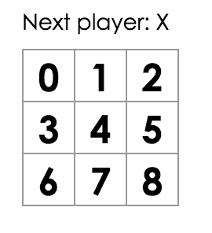

Hoje vamos criar um jogo da velha interativo.
Se quiser, pode visualizar o resultado final aqui. Não se preocupe se o código ainda não fizer sentido para você, ou se ele usa uma sintaxe não familiar. Vamos aprender como criar esse jogo, passo a passo, através desse tutorial.
Comece jogando o jogo. Você pode clicar no botão de "Desfazer" e ver como o tabuleiro era antes do movimento ser executado.
Quando você se tornar familiar com o jogo, fique a vontade para fechar a aba, pois vamos começar com um modelo mais simples nas próximas seções.
Pré-requisitos
Vamos assumir que você tem familiaridade com HTML e JavaScript, mas se você deve ser capaz de seguir em frente mesmo que você não os tenha usado antes.
Se você precisa de uma revisão de JavaScript, recomendamos esse guia. Note que vamos usar funcionalidades do ES6, uma versão recente do JavaScript. Nesse tutorial, we're using funções de seta, classes, let e const.
Como seguir adiante
Há duas formas de completar esse tutorial: você pode escrever o código diretamente no navegador (recomendado), ou você pode configurar um ambiente de desenvolvimento na sua máquina. Você pode escolher a opção com a qual se sentir mais confortável.
Se preferir escrever o código no navegador
Este é o jeito mais rápido de começar!
Primeiro, abra este código inicial em uma nova aba. Ele deve mostrar um jogo da velha vazio. Nós vamos editar este código durante este tutorial.
Você pode pular dessa seção de como configurar o ambiente local direto para a Visão geral.
Se preferir escrever o código no navegador
Alternativamente, você pode configurar esse projeto no seu computador.
Isso dá mais trabalho, mas permite que você aproveite o conforto do seu editor.
Se você quer fazê-lo, aqui estão os passos necessários:
- Tenha certeza que tem uma vers√£o do Node.js instalado.
- Siga as instruções de instalação para criar um novo projeto.
npm install -g create-react-app
create-react-app meu-jogo-da-velha- Apague todos os arquivos da pasta src/ (n√£o apague a pasta, apenas o conte√∫do).
cd meu-jogo-da-velha
rm -f src/*- Adicione um arquivo style.css na pasta src/ com esse código CSS.
- Adicione um arquivo index.js na pasta src/ com esse código JS.
Agora se você executar
npm start
na pasta do projeto e abrir http://localhost:3000 no navegador, deve ver um jogo da velha em branco.
Me ajuda, fiquei preso(a)!
Se você ficar preso em algum passo, peça ajuda no fórum da aula.
O que é React?
React é uma biblioteca JavaScript declarativa, eficiente e flexível para criar interfaces de usuário.
React tem diferentes tipos de componentes, mas vamos começar com subclasses de React.Component:
class ShoppingList extends React.Component {
render() {
return (
<div className="shopping-list">
<h1>Shopping List for {this.props.name}</h1>
<ul>
<li>Instagram</li>
<li>WhatsApp</li>
<li>Oculus</li>
</ul>
</div>
);
}
}
// Examplo de uso: <ShoppingList name="Mark" />Já vamos chegar nessas tags XML engraçadas num momento. Seu componente diz ao React o que você quer renderizar - então o React vai eficientemente atualizar e renderizar os componentes apenas quando seus dados mudarem.
Aqui, ShoppingList é uma classe componente React, ou um tipo de componente React. Um componente recebe parâmetros, chamados props (propriedades), e retorna uma hierarquia de elementos para exibir através do método render.
O método render retorna uma descrição do que você quer renderizar, e então o React toma essa descrição e a renderiza na tela. Em particular, o método render retorna um React element, que é uma descrição simplificada do que renderizar. A maioria dos desenvolvedores React usam uma sintaxe especial chamada JSX que torna mais simples escrever essas estruturas. A sintaxe <div/> é transformada em tempo de compilação em React.createElement(‘div'). O exemplo acima é equivalente a:
return React.createElement('div', {className: 'shopping-list'},
React.createElement('h1', /* ... filhos do h1 ... */),
React.createElement('ul', /* ... filhos do ul ... */)
);Se você está curioso, createElement() é descrito em mais detalhes na referência da API, mas não vamos usá-lo diretamente neste tutorial. Ao invés, vamos continuar usando JSX.
Você pode inserir qualquer expressão JavaScript entre chaves dentro do JSX. Cada elemento React é um objeto JavaScript real onde você pode adicionar variáveis e passá-lo através do seu programa.
O componente ShoppingList apenas renderiza elementos DOM padrão, mas você pode criar elementos customizados com React tão facilmente, ao escrever <ShoppingList/>. Cada componente é encapsulado e pode operar independentemente, o que permite consturir interfaces de usuário (UI) complexas a partir de componentes simples.
Começando
Começe com esse examplo: código inicial.
Ele contém a estrutura do que vamos construir hoje. Nós já fornecemos os estilos, então você só precisa se preocupar com o JavaScript.
Em especial, temos três componentes:
- Square
- Board
- Game
O componente Square (quadrado) renderiza um simples <button>, o Board (tabuleiro) renderiza 9 quadrados, e o componente Game (jogo) renderiza o tabuleiro com alguns espaços que vamos preencher depois. Nenhum desses componentes é interativo nesse momento.
Passando dados através de props
Apenas para se molhar, vamos tentar passar alguns dados para do componente Board para o componente Square:
class Board extends React.Component {
renderSquare(i) {
Return <Square value={i} />;
}Então modificar o método render do componente Square para mostrar o valor substituindo {/* TODO */} com {this.props.value}.
class Square extends React.Component {
render() {
return (
<button className="square">
{this.props.value}
</button>
)
}
}Antes:
Depois: Você pode ver o número de cada quadrado na saída renderizada.

Um componente interativo
Vamos mudar o componente Square preenchendo um "X" quando você clica nele. Tente modificar a tag button retornada no método render() do Square desse jeito:
class Square extends React.Component {
render() {
return (
<button className="square" onClick={() => alert('click')}>
{this.props.value}
</button>
);
}
}Se você clicar no quadrado agora, você deve ver um alerta no navegador.
Isso usa a nova sintaxe do JavaScript para função de seta. Repare que estamos passando uma função na propriedade onClick. Ao clicar, um alerta vai aparecer imediatamente ao invés do clique do botão.
Componentes React podem ter um estado ao definir this.state no construtor, que deve ser considerado privado ao componente. Vamos armazenar o valor do quadrado no estado, e modificá-lo quando o botão é clicado.
class Square extends React.Component {
constructor(props) {
super(props);
this.state = {
value: null,
};
}
render() {
return (
<button className="square" onClick={() => alert('click')}>
{this.props.value}
</button>
);
}
}Em classes JavaScript, você precisa chamar o super(); explicitamente ao definir uma subclasse.
Agora mude o método render do Square para exibir o valor atual do estado, e modificá-lo ao clicar.
- Substitua
this.props.valuecomthis.state.valuedentro da tag<button>. - Substitua o
() => alert()com() => this.setState({ value: ‘X' }).
Agora o <button> se parece com isso:
class Square extends React.Component {
constructor(props) {
super(props);
this.state = {
value: null,
};
}
render() {
return (
<button className="square" onClick={() => this.setState({value: 'X'})}>
{this.state.value}
</button>
);
}
}Sempre que this.setState é chamado, um update ao componente é agendado, fazendo o React combinar a atualização de estado passado e renderizar o componente junto com seus descendentes. Quando o componente re-renderiza, this.props.value var ser ‘X' então você verá um X na grade.
Se você clicar em qualquer quadrado, um X deve aparecer nele.
Ferramentas de desenvolvimento
A extensão para Chrome e Firefox React Devtools permite que você inspecione uma árvore de componentes no seu navegador.

Isso lhe permite inspecionar props e estado de qualquer componente na √°rvore.
Depois de instalá-la, você pode clicar em qualquer parte da página, clicar em "Inspecionar" para abrir as ferramentas de desenvolvimento, e a aba React vai aparecer como a última da direita.